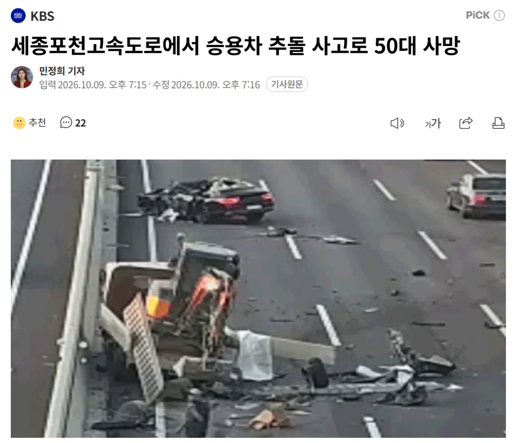
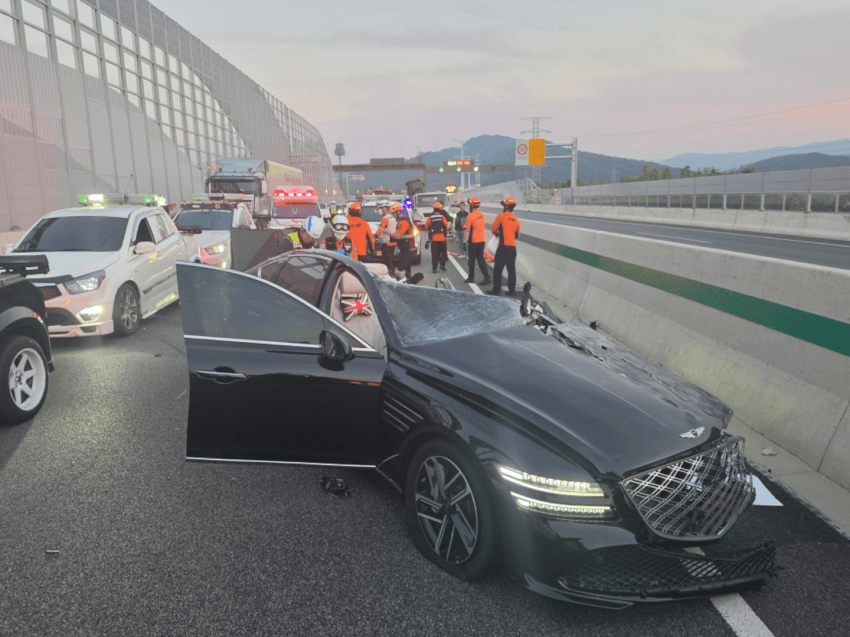
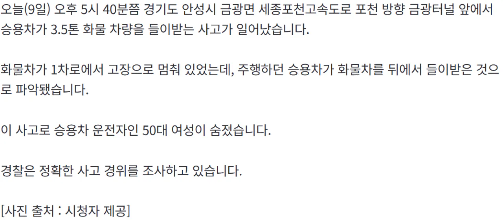

있어도 반응 못하는 상황이 수두룩 빽빽임
결국 운전자 전방주시 안하면 보조기능이 날고 기어봤자 믿을게 못 됨
사실상 되는 경우가 로또 확률이라고 생각하고 타야지
안전옵션 있으니까 사고 안나겠지 마인드로 타다가 저꼴 난거임
그런거면 fsd 막을 이유가 없는건데 쳐 막고 있는거네 이상한 나라야
글로벌 판매량 3위 현대차그룹의 프리미엄 브랜드로 허리를 담당하는 G80이
저런 정차한 차량도 인식도 못하고, 회피조향도 못하는 기술력을 가지고 있는데
안전은 절대 타협하지 않는다고 보도자료 뿌려대는거 보면 기가 차긴함
그 기능은 앞차도 어느정도 달리다가 급정지했을때 기능하지 아에 멈춰있는 차에는 잘 작동안하더만 아마 크루즈키고 딴짓하다가 쳐박힌듯
화물차 운전잔가? 뒤에 삼각대도 안세우고 차가 추돌 직전까지 왔는데 뭐 손이라도 흔들던가 그냥 남일처럼 쳐다보고 있네
화물차가 왜 1차선에 있냐고
지80임? 저 차는 전방충돌방지 기능없음?